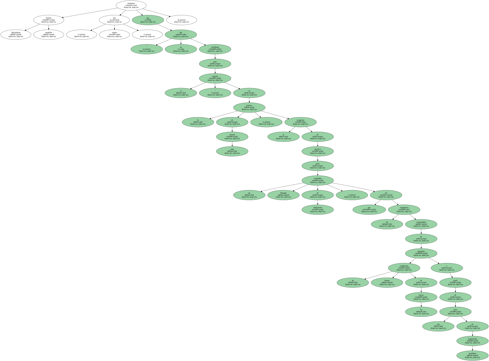
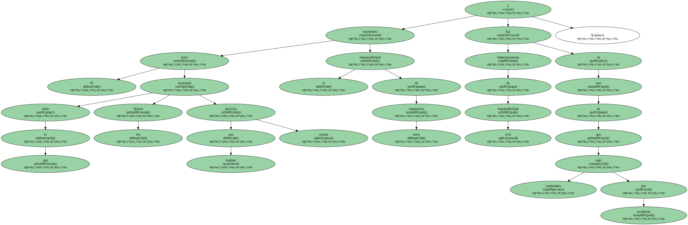
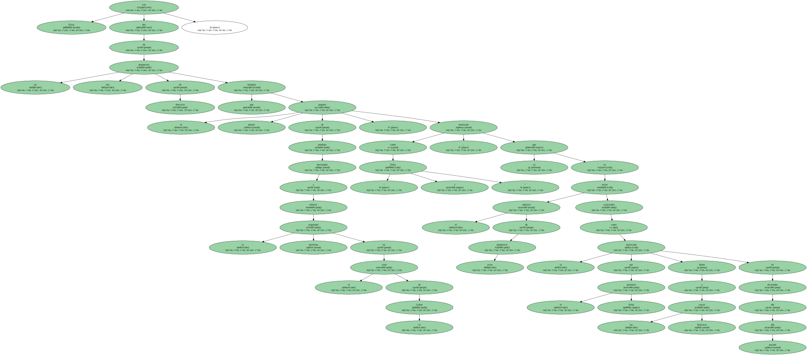
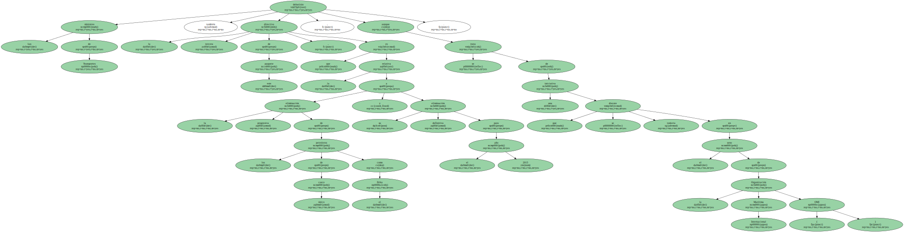
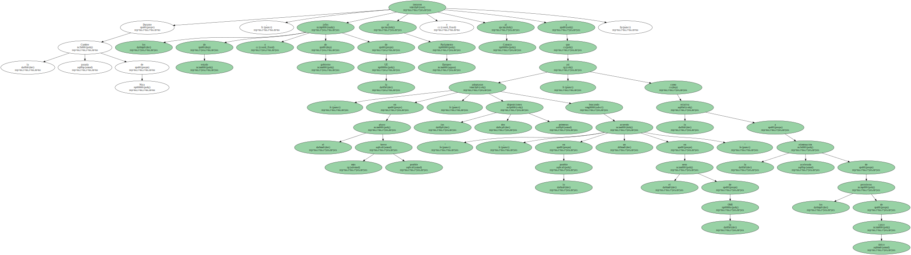

Los ministros de Transportes de la UE intentarán alcanzar mañana , miércoles , un acuerdo sobre la futura norma que regulará los organismos encargados de la inspección de los buques y la relativa al control de los barcos en los puertos europeos.

Fuentes diplomáticas españolas avanzaron hoy , martes , que " no hay problemas para el acuerdo " en la primera de estas normas , la propuesta de directiva sobre las llamadas sociedades de clasificación , que son los organismos responsables de garantizar las buenas condiciones de los barcos a través de una serie de inspecciones periódicas.
El texto sobre el que los Quince alcanzarán mañana una posición común incrementa la responsabilidad de estos organismos y fija indemnizaciones de responsabilidad civil en caso de que sean condenados por accidentes.
En cuanto a la propuesta de directiva sobre el control portuario de los navíos , las fuentes adelantaron también que el acuerdo es posible , aunque se mantienen aún algunas diferencias en torno a los criterios por los que debe fijarse el número de barcos que tendrán que someterse a esos controles.

Estas son dos de las tres propuestas de directiva que integran el primer paquete de medidas destinadas a reforzar la seguridad marítima en el seno de la Unión , bautizado como " Erika I " , ya que el objetivo de estas propuestas es evitar catástrofes como la provocada por el petrolero Erika frente a las costas francesas en diciembre del año pasado.
Los ministros de Transportes también debatirán la tercera directiva de este paquete , que es la relativa a la eliminación progresiva de los petroleros de casco único como el Erika y su eliminación definitiva para el año 2015 , aunque se trata de una iniciativa que se discute todavía en el seno de la Organización Marítima Internacional ( OMI ).
Durante la pasada Cumbre de Niza , los jefes de estado o de gobierno de la UE instaron al Parlamento Europeo y al Consejo a que adoptaran , en el plazo más breve posible , las dos primeras disposiciones , así como la relativa a la eliminación acelerada de los petroleros de casco único " buscando , en lo posible un acuerdo en el seno de la OMI ".
